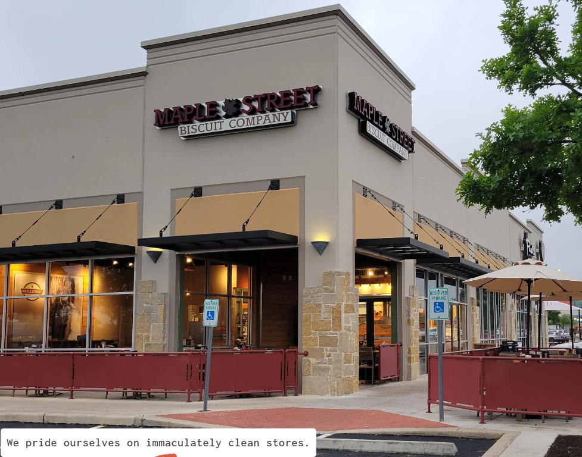
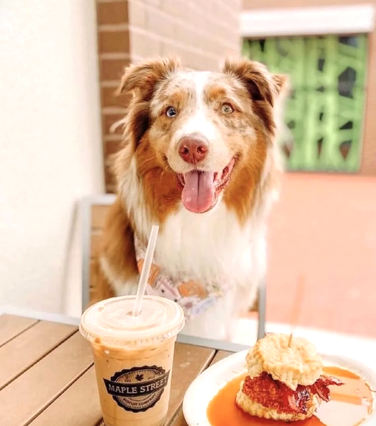

....My family of 4 all thoroughly enjoyed everything. We shared our dishes with each other because we all had to try everything. Don't sleep on this place. Yum doesn't even cover it.
In a world of boring breakfast, we set out to craft scratch-made comfort food, but with a modern twist. With every breakfast, lunch and service-focused catering event, our fresh ingredients, that quirky take on comfort food, and a sense of community go well beyond basic. We aim to leave you both full and fulfilled. We promise to bring you fresh-cracked eggs. We promise to bake our biscuits from scratch every day, and never serve you some previously frozen puck of dough. We promise to provide impeccably clean stores, where you can focus on delicious food and those with whom you choose to enjoy it. Like you, our biscuits are a lot of things, but we promise they’ll never be boring.
CONTACT US

We believe that great taste should never come at the expense of the planet. That’s why our food is sourced from local farms, packaged with sustainable materials, and prepared with methods that reduce waste and energy use. Every meal you enjoy helps support a healthier environment and a greener future.